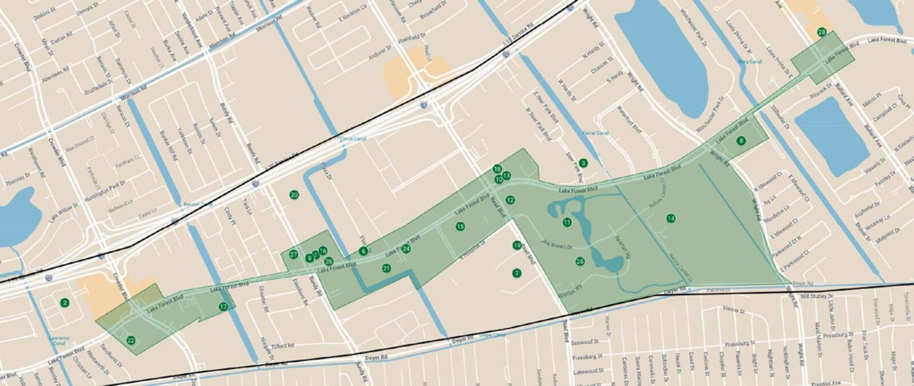
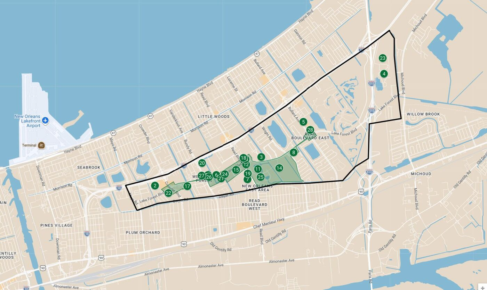

The corridor, on the map.
The proposed footprint follows the Lake Forest Boulevard commercial corridor — Crowder Boulevard to Bullard Avenue — anchored by Joe W. Brown Memorial Park and the Louisiana Nature Center.

Proposed corridor boundary
Numbered cultural asset markers
Corridor endpoints
Crowder Blvd
~3 walkable miles
Bullard Ave
Static styled map concept. Boundary geometry shown is illustrative pending surveyed GeoJSON — see data/map.json.
The pivot
Before and now.
The earlier map spread across large residential areas that don't directly benefit — hard to message, hard to deliver. The focused corridor puts the credit to work on buildings already eligible.

On the corridor